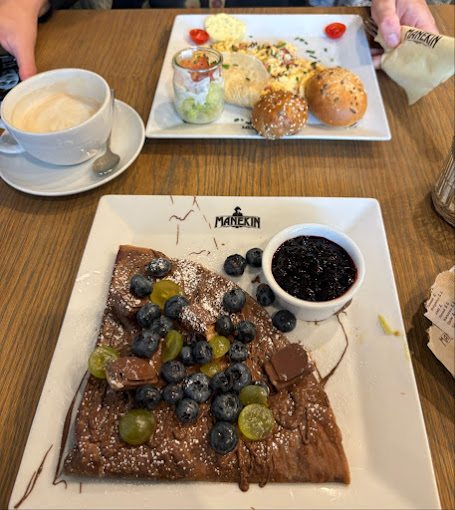

Witaj na stronie poświęconej miastu Szczecin!
Strona została stworzona z myślą o mieszkańcach i turystach, którzy chcą odkryć najciekawsze miejsca w Szczecinie. Znajdziesz tutaj inspiracje do spacerów, pysznego jedzenia i relaksu przy kawie. Naszym celem jest promowanie lokalnych atrakcji i miejsc wartych odwiedzenia.
Atrakcje
Szczecin kryje wiele fascynujących miejsc – od historycznych zabytków po urokliwe bulwary nad Odrą. Kliknij, aby zobaczyć propozycje atrakcji, które warto odwiedzić.
Zobacz atrakcje →


Restauracje
Wybierz się w kulinarną podróż po Szczecinie! Odkryj restauracje z lokalną i międzynarodową kuchnią, które zaskoczą Twoje podniebienie.
Zobacz restauracje →



Kawiarnie
Klimatyczne kawiarnie Szczecina to idealne miejsca na spotkanie z przyjaciółmi lub chwilę relaksu przy dobrej kawie. Sprawdź nasze propozycje!
Zobacz kawiarnie →